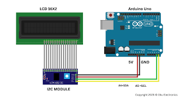

Use only 2 wires to control a 16x2 LCD! The I2C backpack reduces wiring complexity from 16 pins to just 4 (VCC, GND, SDA, SCL). Essential for pin-limited projects.
1. Concept and Description
In this project, you will learn how to use an I2C LCD display. Standard LCDs require many pins, but with an I2C backpack, we only need 2 data pins (SDA and SCL). This is crucial for advanced projects where you need to save pins for sensors and motors.
I2C communication basics
Using LCD backpack modules
Finding I2C device addresses
LiquidCrystal_I2C library
2. Components Needed
(1) Arduino Uno (or compatible board)
(1) 16x2 LCD with I2C Backpack (Pre-soldered module)
(4) Jumper Wires (Female-to-male)
3. Physical Montage (Wiring Instructions)
Connect the 4 pins from the I2C backpack to the Arduino:
VCC to 5V
GND to GND
SDA to A4 (or SDA pin on newer boards)
SCL to A5 (or SCL pin on newer boards)

4. The Code (Arduino Sketch)
Copy and paste the code below into your Arduino IDE. You must install the "LiquidCrystal_I2C" library via the Library Manager first.
/*
* Project #30: I2C LCD (PCF8574 Backpack)
* The Arduino Student Lab
*
* Control 16x2 LCD with just 2 data wires using I2C
* Address scanner included if display doesn't work
*/
#include <Wire.h>
#include <LiquidCrystal_I2C.h>
// ============================================// LCD CONFIGURATION// ============================================// Common I2C addresses: 0x27 or 0x3F// If display doesn't work, run the I2C scanner below
LiquidCrystal_I2C lcd(0x27, 16, 2);
// ============================================// CUSTOM CHARACTERS// ============================================byte thermometer[8] = {
0b00100,
0b01010,
0b01010,
0b01110,
0b01110,
0b11111,
0b11111,
0b01110
};
byte droplet[8] = {
0b00100,
0b00100,
0b01010,
0b01010,
0b10001,
0b10001,
0b10001,
0b01110
};
// ============================================// SETUP// ============================================void setup() {
Serial.begin(9600);
Serial.println("=== I2C LCD DISPLAY ===");
// Initialize I2C LCD
lcd.init();
lcd.backlight(); // Turn on backlight// Create custom characters
lcd.createChar(0, thermometer);
lcd.createChar(1, droplet);
// Startup message
lcd.setCursor(0, 0);
lcd.print("I2C LCD Ready!");
lcd.setCursor(0, 1);
lcd.print("Only 4 wires!");
Serial.println("LCD Initialized at address 0x27");
Serial.println("If blank, run I2C scanner");
delay(2000);
}
// ============================================// MAIN LOOP// ============================================void loop() {
// Demo: Simulated sensor display
lcd.clear();
// Temperature display
lcd.setCursor(0, 0);
lcd.write(byte(0)); // Thermometer icon
lcd.print(" Temp: ");
float temp = 22.5 + (random(-10, 10) / 10.0);
lcd.print(temp, 1);
lcd.print((char)223); // Degree symbol
lcd.print("C");
// Humidity display
lcd.setCursor(0, 1);
lcd.write(byte(1)); // Droplet icon
lcd.print(" Humid: ");
int humid = 45 + random(-5, 5);
lcd.print(humid);
lcd.print("%");
delay(2000);
// Scrolling message demo
lcd.clear();
lcd.setCursor(0, 0);
lcd.print("Scrolling Text:");
String message = "I2C makes wiring so much easier! ";
for (int pos = 0; pos < message.length(); pos++) {
lcd.setCursor(0, 1);
// Show 16 characters starting at current positionfor (int i = 0; i < 16; i++) {
int charIndex = (pos + i) % message.length();
lcd.print(message[charIndex]);
}
delay(250);
}
delay(1000);
}
/*
* I2C ADDRESS SCANNER
*
* If your LCD stays blank, upload this code to find the address:
*
* #include
*
* void setup() {
* Wire.begin();
* Serial.begin(9600);
* Serial.println("I2C Scanner");
* }
*
* void loop() {
* byte error, address;
* int devices = 0;
*
* Serial.println("Scanning...");
*
* for (address = 1; address < 127; address++) {
* Wire.beginTransmission(address);
* error = Wire.endTransmission();
*
* if (error == 0) {
* Serial.print("Device found at 0x");
* if (address < 16) Serial.print("0");
* Serial.println(address, HEX);
* devices++;
* }
* }
*
* Serial.print("Found ");
* Serial.print(devices);
* Serial.println(" device(s)");
* Serial.println();
*
* delay(5000);
* }
*/
5. How It Works & Challenges
How It Works: The PCF8574 chip acts as a translator. It takes I2C commands from the Arduino (which only need 2 wires) and toggles the 8 parallel pins connected to the LCD screen.
Challenges:
Two LCDs: Connect two displays with different addresses.
Sensor Dashboard: Display real sensor data (temperature, etc.).